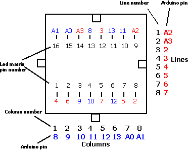

Purpose
Schema

Led matrix wiring (TOP VIEW).
Preparation
It will use the led matric code that can be found here :
Arduino and a Dot Matrix
Setting up the environment
We will use the
Arduino without arduino technique with a variation, this time we will use a Atmega 88. Same as 328 but with 8kb memory, plenty sufficient for what we will do. See
Arduino without arduino for all the details (Setup the environment and the fuses...)
Code
Everything is here :
http://code.google.com/p/alanarduinotools/source/browse/#svn/trunk/LedMatrixCompanion
Standalone mode
Load it with some program that will do some nice display, bouncing ball, random dots, life game ... whatever you can program and find nice.
Display mode
Using the serial pins, pilot it using the super simple protocol to display, image, animated message, again a bouncing ball... Nice thing is that you can chain multiple ones and have a bigger display.
For now protocol doesn't include addressing info, so
currently you need as many serial communication pin as module you have. That's job for a Arduino in the background using multiple NewSoftSerial.
Protocol
Very simple, expects the following commands:
- R : clears the display
- CXX : on 3 char, C is the column index (0 <= C <= 7) and XX is the hexadecimal representation of the line (1 = led on, 0 = led off)
Links
Same kind of stuff
Serial on ATmega 88